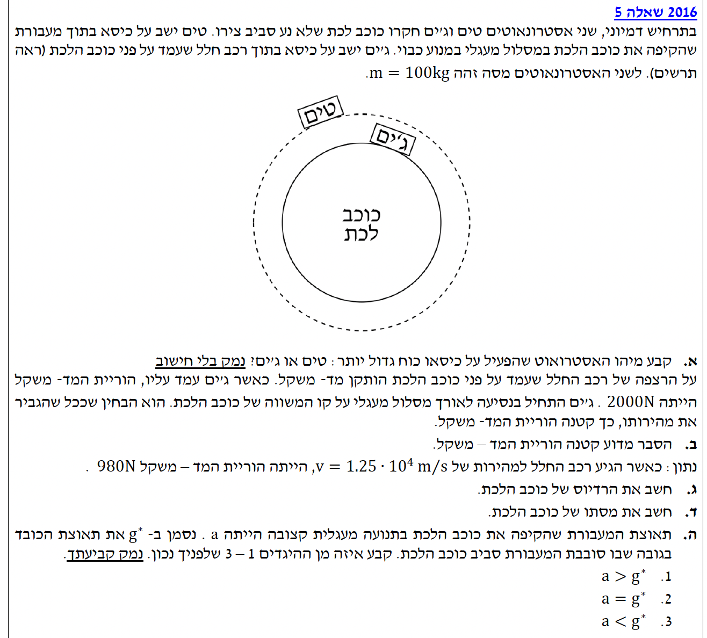

פתרון בגרות בפיזיקה - מכניקה
שנת 2016 / שאלה 5
עודכן:
--- --:--:--
מבט כללי על השאלה
ברוכים הבאים לפתרון המודרך! נעבור יחד צעד אחר צעד על שאלת כבידה ותנועה מעגלית. קחו נשימה עמוקה, אנחנו מתחילים.

[תמונת השאלה המקורית]
לא נמצאה תמונה בשם question-image.png באותה תיקייה.
מה נתון: טים נמצא במעבורת המקיפה את כוכב הלכת במסלול מעגלי במנוע כבוי (נפילה חופשית). ג'ים יושב בתוך רכב חלל שעומד במנוחה על פני כוכב הלכת. נניח שלשניהם מסה זהה \( m \).
מה מחפשים: לקבוע מי מהאסטרונאוטים, טים או ג'ים, מפעיל כוח גדול יותר על הכיסא שעליו הוא יושב, ולנמק (ללא חישוב מספרי).
נוסחאות ועקרונות בשימוש:
\( \Sigma \vec{F} = m\vec{a} \)
עקרונות: נשתמש בחוק השלישי של ניוטון (פעולה ותגובה) הקובע שהכוח שהאסטרונאוט מפעיל על הכיסא שווה בגודלו והפוך בכיוונו לכוח הנורמלי (\( N \)) שהכיסא מפעיל על האסטרונאוט. לכן, נמצא על מי פועל כוח נורמלי גדול יותר.
הצבה ופתרון:
ננתח כל אסטרונאוט בנפרד בעזרת תרשים כוחות (FBD):
עבור טים: המעבורת מקיפה את כוכב הלכת במנוע כבוי, כלומר היא וכל מה שבתוכה נמצאים במצב של "נפילה חופשית" סביב הכוכב. הכוח היחיד הפועל עליו הוא כוח הכבידה (\( F_g \)) המשמש כולו ככוח צנטריפטלי הדרוש לתנועה המעגלית. כיוון שטים והכיסא מאיצים יחד באותה תאוצה, אין דחיפה ביניהם ולכן \( N_{Tim} = 0 \).
\[ \Sigma F = F_g = m a_R \]
עבור ג'ים: ג'ים נמצא במנוחה על פני כוכב הלכת, לכן תאוצתו אפס (\( a = 0 \)). נבחר ציר חיובי כלפי מעלה. נפעיל את החוק השני של ניוטון:
\[ \Sigma F_y = N_{Jim} - F_g = 0 \quad \Rightarrow \quad N_{Jim} = F_g = m g^* \]
כאשר \( g^* \) היא תאוצת הנפילה החופשית (תאוצת הכובד) על פני הכוכב. מכיוון שכוח הכבידה על ג'ים אינו אפס, אז \( N_{Jim} = m g^* > 0 \).
לפי החוק השלישי של ניוטון, הכוח שהאדם מפעיל על הכיסא שווה לכוח הנורמלי \( N \). מכיוון ש- \( N_{Jim} = m g^* \) ואילו \( N_{Tim} = 0 \), ג'ים מפעיל כוח גדול יותר על הכיסא.
מסקנה: ג'ים מפעיל כוח גדול יותר על כסאו לעומת טים (\( N_{Jim} = m g^* \) לעומת \( N_{Tim} = 0 \)).
טיפ מורה: זכרו את הכלל - "חוסר משקל" (כמו שטים חווה) אינו אומר שאין כוח כבידה! זה אומר שאין כוח נורמלי (תמיכה). טים והמעבורת נופלים יחד, ולכן הוא לא "נלחץ" אל הכיסא.
מה נתון: מסתו של ג'ים היא \( m = 100 \text{ kg} \). ג'ים עומד על מאזניים שמונחים על רצפת רכב החלל שעל פני כוכב הלכת. כאשר הרכב עומד (במנוחה), הוריית המאזניים היא \( N_0 = 2000 \text{ N} \) (כבר במערכת MKS). לאחר מכן, הרכב מתחיל לנוע במסלול מעגלי. נתון שככל שגודל המהירות גדל, הוריית המאזניים קטנה.
מה מחפשים: להסביר מדוע הוריית המאזניים (הכוח הנורמלי \( N \)) קטנה כאשר גודל המהירות המשיקית (\( v \)) של ג'ים גדל.
נוסחאות ועקרונות בשימוש:
\( \Sigma \vec{F} = m\vec{a} \)
\( a_R = \frac{v^2}{r} \)
עקרונות: הוריית המאזניים שווה לגודל הכוח הנורמלי (\( N \)) שהם מפעילים על ג'ים.
הצבה ופתרון:
נשרטט תרשים כוחות לג'ים בעת תנועתו. נבחר ציר רדיאלי שכוונו חיובי כלפי מרכז כוכב הלכת, שכן לשם מכוונת התאוצה הרדיאלית.
נרשום את משוואת הכוחות בציר הרדיאלי (לפי החוק השני של ניוטון):
\[ \Sigma F_R = F_g - N = m a_R \]
נציב את הביטוי לתאוצה הרדיאלית ונקבל:
\[ F_g - N = m \frac{v^2}{r} \]
נבודד את הכוח הנורמלי (הוריית המאזניים):
\[ N = F_g - m \frac{v^2}{r} \]
הסבר הפיזיקלי: כוח הכבידה \( F_g \) על פני הכוכב הוא קבוע. כאשר ג'ים נוסע ומגדיל את גודל מהירותו (\( v \)), הביטוי \( m \frac{v^2}{r} \) (הכוח השקול הדרוש לתנועה מעגלית) גדל. כדי שהשקול יגדל בעוד שכוח הכבידה המושך פנימה קבוע, הכוח הנורמלי \( N \) (שדוחף החוצה) חייב לקטון.
מסקנה: כדי לאפשר את התנועה המעגלית, נדרש כוח שקול אל מרכז הכוכב. ככל שהמהירות גדלה, נדרש כוח שקול גדול יותר, ולכן הכוח הנורמלי שמתנגד לו חייב לקטון.
טיפ מורה: שגיאה נפוצה היא לחשוב ש"כוח הכבידה נחלש כי אנחנו זזים מהר". זה לא נכון! כוח הכבידה (\(F_g\)) קבוע כל עוד אנחנו באותו מרחק ממרכז הכוכב. מה שמשתנה הוא חלוקת התפקידים - יותר מכוח הכבידה "מנוצל" לסיבוב במעגל, ולכן פחות נשאר כדי "ללחוץ" אותנו אל הרצפה.
מה נתון:
ממצב מנוחה (סעיף ב'): \( N_{\text{rest}} = 2000 \text{ N} \).
במהירות \( v = 1.25 \cdot 10^4 \text{ m/s} \), המאזניים מראים \( N = 980 \text{ N} \).
מסה של ג'ים: \( m = 100 \text{ kg} \).
מה מחפשים: את רדיוס כוכב הלכת, שנסמנו ב- \( R \).
נוסחאות ועקרונות בשימוש:
\( \Sigma \vec{F} = m\vec{a} \)
\( a_R = \frac{v^2}{r} \)
חישוב:
ראשית, נמצא את גודל כוח הכבידה \( F_g \) הפועל על ג'ים. במנוחה (\( v = 0 \)), הוריית המאזניים הייתה \( 2000 \text{ N} \). נציב במשוואת הכוחות:
\[ N_{\text{rest}} = F_g - m \frac{0^2}{R} \quad \Rightarrow \quad F_g = 2000 \text{ N} \]
כעת, נשתמש במשוואת הכוחות שפיתחנו בסעיף הקודם עבור התנועה המעגלית, ונציב את הנתונים החדשים כדי לבודד את \( R \):
\[ F_g - N = m \frac{v^2}{R} \]
\[ 2000 - 980 = 100 \cdot \frac{(1.25 \cdot 10^4)^2}{R} \]
נחשב את האגף השמאלי ואת מונה השבר באגף הימני:
\[ 1020 = 100 \cdot \frac{1.5625 \cdot 10^8}{R} \]
\[ 1020 = \frac{1.5625 \cdot 10^{10}}{R} \]
נכפול ב- \( R \) ונחלק ב- \( 1020 \):
\[ R = \frac{1.5625 \cdot 10^{10}}{1020} \]
\[ R = 15,318,627.45 \text{ m} \]
מסקנה (לאחר עיגול): רדיוס כוכב הלכת הוא \( R = 1.53 \cdot 10^7 \text{ m} \).
טיפ מורה: תמיד חפשו רמזים במצבי הקיצון. המנוחה (\(v=0\)) הייתה הדרך של השאלה "לתת" לכם את כוח הכבידה על פני הכוכב בלי להגיד זאת במפורש. הקפידו לעבוד עם חזקות וכתיב מדעי במחשבון כדי למנוע טעויות חישוב!
מה נתון:
מסת ג'ים: \( m = 100 \text{ kg} \).
כוח הכבידה על פני הכוכב: \( F_g = 2000 \text{ N} \).
רדיוס הכוכב (מסעיף קודם, לאחר עיגול ל-3 ספרות מהותיות): \( R = 1.53 \cdot 10^7 \text{ m} \).
קבוע הגרביטציה: \( G = 6.67 \cdot 10^{-11} \text{ N}\cdot\text{m}^2/\text{kg}^2 \).
מה מחפשים: את מסת כוכב הלכת, שנסמנה ב- \( M \).
נוסחאות ועקרונות בשימוש:
\( F = G\frac{m_1 m_2}{r^2} \)
חישוב:
נשתמש בנוסחת כוח הכבידה העולמי, כאשר הגופים הם ג'ים וכוכב הלכת, והמרחק ביניהם הוא רדיוס כוכב הלכת \( R \):
\[ F_g = G\frac{M m}{R^2} \]
נבודד את מסת הכוכב \( M \):
\[ M = \frac{F_g \cdot R^2}{G \cdot m} \]
נציב את הנתונים (ונשתמש ברדיוס המעוגל שחישבנו בסעיף הקודם):
\[ M = \frac{2000 \cdot (1.53 \cdot 10^7)^2}{6.67 \cdot 10^{-11} \cdot 100} \]
\[ M = \frac{2000 \cdot 2.3409 \cdot 10^{14}}{6.67 \cdot 10^{-9}} \]
\[ M = \frac{4.6818 \cdot 10^{17}}{6.67 \cdot 10^{-9}} \]
\[ M = 7.019 \cdot 10^{25} \text{ kg} \]
מסקנה (לאחר עיגול): מסת כוכב הלכת היא \( M = 7.02 \cdot 10^{25} \text{ kg} \).
טיפ מורה: כפי שראינו, אנו מקפידים לעבוד עם הנתונים המעוגלים (3 ספרות מהותיות) שהתקבלו בסעיפים הקודמים. זה שומר על עקביות וסדר לאורך כל הפתרון. אל תחששו מסטייה קטנה בתוצאה הסופית לעומת חישוב ללא עיגול – זו בדיוק המשמעות של עבודה לפי כללים של ספרות מהותיות!
מה נתון: המעבורת של טים מקיפה את כוכב הלכת (במנוע כבוי). התאוצה הרדיאלית שלה מסומנת ב-\( a \). תאוצת הנפילה החופשית (תאוצת הכובד) במקום שבו נמצאת המעבורת מסומנת ב-\( g^* \).
מה מחפשים: לקבוע איזה מההיגדים הבאים נכון ולנמק: \( a > g^* \) או \( a = g^* \) או \( a < g^* \).
נוסחאות ועקרונות בשימוש:
\( \Sigma \vec{F} = m\vec{a} \)
\( W = mg \)
עקרונות: כוח הכבידה מוגדר כמשקל הגוף באותו מיקום (\( F_g = mg^* \)). המעבורת נמצאת בנפילה חופשית תחת השפעת כוח הכבידה בלבד.
הסבר ופיתוח:
כאשר המעבורת מקיפה את כוכב הלכת במנוע כבוי, היא נמצאת למעשה במצב של נפילה חופשית. הכוח היחיד הפועל עליה הוא כוח הכבידה של כוכב הלכת באותו גובה.
על פי הגדרת תאוצת הכובד המקומית, גודל כוח הכבידה הפועל על המעבורת (שמסתה \( m \)) באותו מיקום הוא:
\[ F_g = m g^* \]
על פי החוק השני של ניוטון, כוח זה הוא הכוח השקול המעניק למעבורת את התאוצה הרדיאלית שלה (\( a \)) במסלול המעגלי:
\[ \Sigma F_R = m a \quad \Rightarrow \quad F_g = m a \]
נשווה בין שתי המשוואות:
\[ m g^* = m a \quad \Rightarrow \quad g^* = a \]
מסקנה: היגד 2 הוא הנכון: \( a = g^* \).
טיפ מורה: זהו קונספט יסודי וחשוב! תנועה מעגלית של לוויין או מעבורת סביב כוכב לכת היא בעצם נפילה חופשית מתמדת. המעבורת "נופלת" כלפי מרכז הכוכב בדיוק בתאוצת הכובד הקיימת באותו גובה (\( g^* \)), וזו מספקת לה בדיוק את התאוצה הרדיאלית (\( a \)) הנדרשת כדי להישאר במסלול המעגלי.